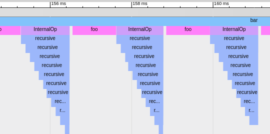
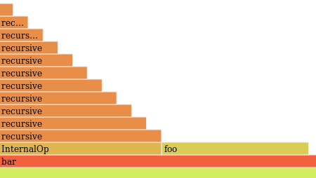

<div class="grid">
  <div class="unit two-thirds" style="font-size: 22px">
    Follow few simple steps to find weak points and improve performance of your software!
    <br />
    <a href="#features" style="font-size: 16px">Learn more about the features</a>
  </div>
  <div class="unit one-third">
    <div style="padding:20px;background: #428BCA; text-align: center; border-radius: 6px; color: white">
      <span style="font-weight: bold; font-size: 20px">Get started</span><br />
      Version {{ site.hawktracer_version }}
    </div>
  </div>
  <div class="clear"></div>
</div>
<div class="grid">
  <div class="unit half">
    1) Instrument your code:
    {% highlight c %}
void foo()
{
  HT_TP_G_FUNCTION();
  very_expensive_call();
}
void bar()
{
  HT_TP_G_FUNCTION();
  for (int i = 0; i < 100; i++)
  {
    foo();
    {
      HT_TP_G_STRACEPOINT("InternalOp");
      recursive(10);
    }
  }
}
    {% endhighlight %}
  </div>
  <div class="unit half">
    2) Analyze results:
    <ul style="padding-top: 10px">
      <li><a href="https://www.chromium.org/developers/how-tos/trace-event-profiling-tool/frame-viewer">ChromeTracing view</a>:
        
      </li>
      <li><a href="http://www.brendangregg.com/flamegraphs.html">FlameGraph view</a>:
        
      </li>
    </ul>
  </div>
  <div class="clear"></div>
</div>

<h2 id="features">Features:</h2>
{% include featureslist.html %}